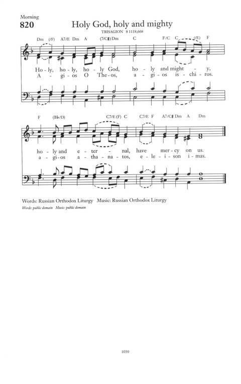

|
|
颂主新歌 |
Representative Text1 Jesus is our Shepherd, 2 Jesus is our Shepherd: 3 Jesus is our Shepherd: 4 Jesus is our Shepherd: |
1.耶稣是我善牧，将我泪擦去，
他抱我在怀里，我还有何惧？ 我们要跟从他，紧随他脚步， 或到沙石旷野，或到水草处。 2.耶稣是我善牧，我认他声音， 听他柔声呼唤，喜乐顿满心。 虽然有时责备，声音仍是爱， 但愿他常领我，常与我同在。 3.耶稣是我善牧，为其羊舍命， 群沾宝血洪恩，罪污得洁净。 群羊印上记号，是主亲记妥， 说：‘有我圣灵者，便都是属我。’ 4.耶稣是我善牧，蒙他手保护， 虽有豺狼叫嚎，必泰然安舒。 过那死亡幽谷，四围尽黑暗， 我必得胜幽冥，安然不惊战。
|
|
https://www.mred365.cn/szxg/7499.html
 |
|
|
|
|


https://youtu.be/Yt1YscrHLiI - Jesus Is Our Shepherd
| Text: | Jesus is Our Shepherd |
| Author: | Hugh Stowell |
| Short Name: | Hugh Stowell |
| Full Name: | Stowell, Hugh, 1799-1865 |
| Birth Year: | 1799 |
| Death Year: | 1865 |
Stowell, Hugh,
an able and popular
minister of the Church of England, was born at Douglas, Isle of Man,
December 3, 1799. He graduated at Oxford in 1822, and took holy orders the
following year. He held various offices in his Church; became rector at
Salford in 1831; was appointed honorary Canon of Chester Cathedral in 1845,
and later Rural Dean of Eccles. He published several volumes. He also edited
a book of hymns: A Selection of Psalms and Hymns Suited to the Services of
the Church of England, 1831. To the several editions of this book most of
his hymns were contributed. He died at Safford October 8, 1865.
From every stormy wind that blows 495
Lord of all power and might 206
Hymn Writers of the Church, 1915 by Charles Nutter
Tune Information
| Title: | GOSHEN (Davis) |
| Composer: | Marchel Davis (cir. 1848) |
| Meter: | 6.5.6.5 D |
| Incipit: | 11765 35321 21176 |
| Key: | B♭ Major |
| Copyright: | Public Domain |